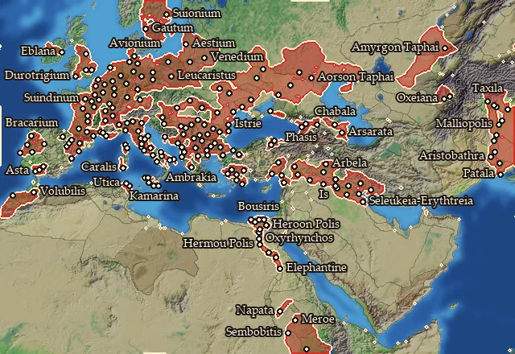

RTR: Imperium Surrectum
RTR: Imperium SurrectumRiver trade
← all regions and settlements · wiki index
Whether a region lies on a navigable river. Only such a region can build a river port.
| River | Regions | Builds | Blocks | Effects | Units | ||||||
|---|---|---|---|---|---|---|---|---|---|---|---|
| Navigable river | 208 | 2 | — | — | — |
Navigable river

On 208 regions.
- Lets you build: 2 building levels: River Ports, Inland Trade centre
Regions on a navigable river (208)
Aeduia · Aestia · Ager Gallicus · Akragas · Albania · Albocensia · Allobrogia · Amantinia · Ambiana · Ambrakikos Kolpos · Amyrgia · Anartia · Ankobaritis · Ano Aorsia · Aorsia · Apamene · Apolloniatis · Apulia · Aquitania · Arbelitis · Ardiaea · Arecomicia · Arsa · Arsinoites Nomos · Assyria · Autariataia · Avionia · Babylonia · Basilike Skythia · Bastarnia Vetus · Bellia · Beronia · Bessike · Biturigia · Boiaea · Borysthenes · Bosporos · Bousirites Nomos · Bracarensia · Brenaia · Brigantia · Buridavensia · Cadurcia · Calabria · Campania · Carnutia · Carpiania · Catuvellaunia · Ceiagisia · Cenomania · Cenomania-Aulercia · Chaldaia · Charakene · Chatriaia · Chattia · Chaucia · Cheruscia · Corsica · Daunia · Durotrigia · Eblania · Eburonia · Edonis · Elymais · Elymia · Elysicea · Emathia · Epetia-Salonitis · Eraviscia · Etruria · Eumolpia · Faliscia · Frisia · Galindia · Gautia · Genuatea · Georgike Skythia · Getaia · Gylakeia · Halmyris · Hasta · Helmantike · Helvetia Vetus · Hermopolites Nomos · Heroopolites Nomos · Hipparia · Hydaspes · Iberia · Ilercavonia · Ilergetia · Illyria · Indos · Insubria · Ionia · Kalbia · Kallatisia · Karaly · Kardia · Kaspeiraia · Kaspiane · Kataonia · Kathaia · Kilikia Pedias · Kolchis · Kyrnos · Labeataia · Langobardia · Latium · Lemannus Inferior · Lemovicia · Lingonia · Lugia · Lusitania · Lydia · Lykia · Magna Graecia · Maiandros · Mallia · Marcomannia Vetus · Mardyenia · Mareotis · Mauretania · Mauretania Meridionalis · Mediomatricia · Medwi · Megabaria · Memphites Nomos · Menapia · Menelaites Nomos · Mesopotamia · Moesia · Mousikania · Naissitania · Napa · Nervia · Neuria · Nikephoreia · Nile Delta · Nomadike Skythia · Notia Bithynia · Odrysia · Olbiana · Ombites Nomos · Orchoe · Osrhoene · Oxos · Oxyrhynchites Nomos · Paelignia · Paionia · Pandoouia · Parisia · Patalene · Pathyrites Nomos · Phanagoreion · Phasis · Phrygia · Pictonia · Pontos · Portikania · Poseidonia · Qart Hadasht · Remia · Saguntia · Salluvia · Saramene · Sargetiaea · Sauromataia · Savia · Sedetania · Segobrigia · Semnonia · Senonia · Sequania · Sittakene · Skordiskia · Sogdia-Indos · Sousiane · Suessetania · Sugambria · Suionia · Syria · Tagia · Tanaitis · Taurinia · Tauriscia · Tectosagia · Tenessis · Teuriscia · Thinites Nomos · Tingene · Treria · Treveria · Triballia · Trinakria · Trinobantia · Turdetania · Turdetania Septentrionalis · Turdulorum Oppida · Tyrasia · Ubia Vetus · Umbria · Velzna · Venedia · Venetia · Vindelicia · Volcaea · Xatiq · Ziz